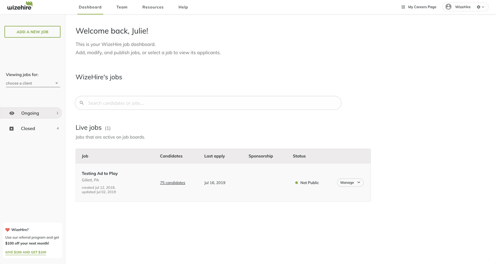
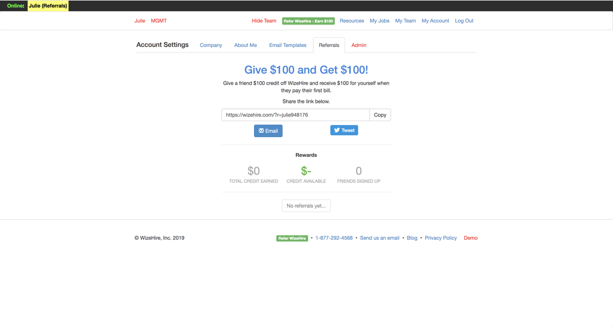
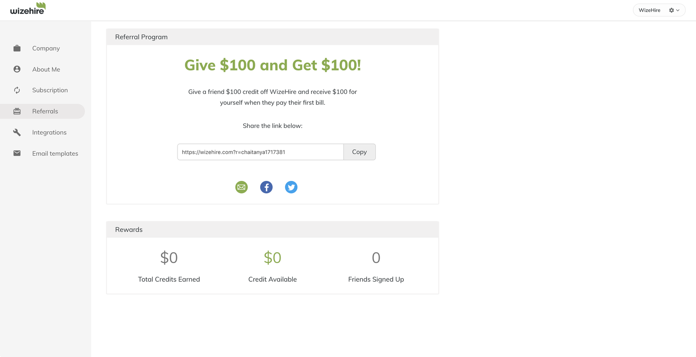
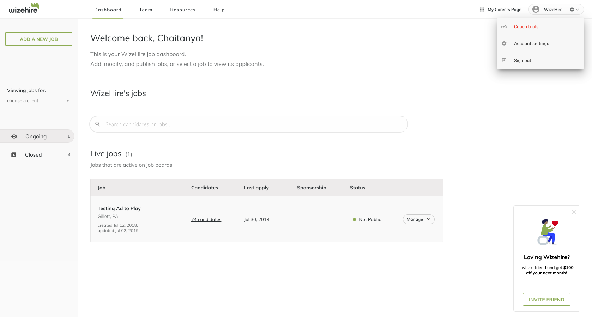
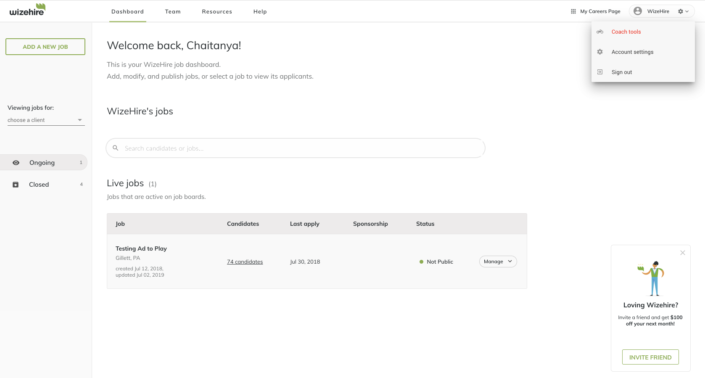
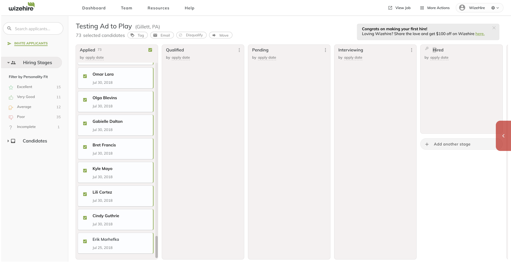

Designing for growth at Wizehire
Product design intern · Summer 2019
Overview
Designing a new referral experience within the Wizehire ATS to increase new user growth and aid monetization.
Role
Lead designer on cross functional team.
Project Timeline
4 weeks
Team
Chaitanya Prashant - Design
Chad Masso - Product and Engineering
Ritz Wu - Data
Leisha Scallan - Illustrator
Olive Krawczyk - Content
Responsibilities
Design research, interaction and visual design, and product thinking.
Introduction
This project was a growth initiative aiming to better allow SMB (small and medium business) owners who use the Wizehire product for their hiring needs, to invite others facing similar hiring needs in their network. While I co-lead design of the feature, I worked with two product engineers, a writer, and another designer
As my first design project focused on growth, I realized that while it is important to be informed by metrics and data, we should also consider the broader user’s journey, instead of paywalls that could serve to be intrusive to the user and increase churn.
Hypothesis
If we surface referral options to users at moments of achievement, as well as areas that are discoverable within context, it would allow users to share the value of Wizehire as a product to others within their network, driving new user growth.
Understanding the Problem
Opportunities
tl;dr: A very small percentage of promoters (2%) are responsible for 90% of the referrals from the Wizehire product, and they make up a very small part of the number of promoters (13%). There are opportunities to surface invites in a more discoverable way so that users can share the product with other friends + family who have hiring needs, while getting $100 off after each friend signs up.
NPS scores across the year
While it seems surprising that NPS scores started high and kept on fluctuating, just that metric doesn’t tell the whole story, as the response rate sample sizes were small during this period.
At the turn of the year, Wizehire went through a comprehensive redesign, which saw an uptick in both user response rate, as well as the number of active users on the platform.
How many referrals have been sent out over the years?
Although the number of referrals isn’t a metric that provides deep trend of invites in the product, a metric that was useful to see an opportunity was a cohort’s (the year a user signed up) propensity to invite.

How many existing users (promoters) are sending out invites to others on the platform?
Taking a closer look at the number of promoters throughout this two year span since the referral program was launched, they make up 65% of the user population who responded to an NPS survey (response rate: 24%).
However, there were only 51 users who referred 300 people, which is 13% of the overall promoter base out of 2,552 users.
While referral programs can seem sketchy in a lot of situations, a well designed referral program is one which offers the user a reminder and an incentive as to what they value about the product, which is why we aimed to validate our hypothesis with promoters first.
Survey
I sent out a private survey to 40 of the promoters on the product, aiming to validate some of the numbers, with some key questions including
- Have you ever referred someone to Wizehire? If so, how many times?
- Where did you access the referral from within the product?
- Was it easy to find the referral page in the product? If not, why so?
- Why did you refer Wizehire?
The main insight from these survey results were that referrals were only easily accessible from the sidebar, with 40% of the users not knowing that they could get to the referrals page through account settings. 90% respondents also validated that they refer Wizehire to friends due to the value they find in the product themselves.
Auditing the current experience
tl;dr: An engineer and myself led an audit of the current referral experience. The audit, alongside the survey results helped us realize that most of our users weren’t discovering the referrals feature, whilst the current referrals feature suffered from a lack of consistency. We also analyzed the user’s journey to identify touchpoints and moments of achievement where referrals could possibly be surfaced.
Myself and a product engineer led an audit on the current referral experience to identify areas of improvement in the referral experience, as well as analyze the different points of entry.
Referral callout surfaced on the dashboard
Legacy referrals page that is shown after clicking on the callout link
To invite a friend, a user can click on the link in the call-out, but it leads to the legacy referrals page, whilst the product’s own referrals page is within settings.
This inconsistent experience can lead to a lack of context and trust in certain situations, with a lot of users being confused as to why they were lead to a different looking product.
Another problem we identified was the lack of visibility for the referrals program, as it was only accessible with a small call-out in the sidebar navigation.
The referrals page itself is also abstracted away in the information architecture, being housed in the advanced settings page.
Referrals page within the product
The audit along with the survey helped us realize that most of our users weren’t discovering the referrals feature.
I also explored a user’s journey throughout using Wizehire to identify key touchpoints in their journey where they achieve their goal in terms of using the product, and what features they use the most. This helped us set principles for the referral experience that would serve as a north star for the project.
Note: I am currently unable to showcase the diagram due to an NDA signed with the company, however the insights our team gained were instrumental in setting goals for the entire experience, as well as informed us as we designed various user flows for the experience.
Some of the key touchpoints in the experience included
- When the user makes a hire within the ATS
- A user whilst using the dashboard (main activity hub)
- When a user’s account closes (Wizehire isn’t a permanent subscription service)
- New user experience for an invited user
- Top level account navigation
Goals
Wizehire goals
- Make it easier for Wizehire users who value the product to be able to share it with friends and their network
- Increase number of referrals for dormant promoters within the product.
User goals
- Share Wizehire's value with other people within their network who need hiring help
- Use Wizehire's product at a cheaper price (through the $100 off for each friend that is referred and signed up on the platform)
Principles
We set ourselves principles or key experience goals that would guide our designs and ensure that we stayed in scope.
- Easily accessible, but not intrusive
- Scalability - How might we design the referral experience to be scalable, so that the experience is consistent and engineering workload is reduced.
- When a user’s account closes (Wizehire isn’t a permanent subscription service)
- New user experience for an invited user
- Top level account navigation
What does success look like?
An increase in the percentage of invites sent out on the platform(propensity to refer should be in the 0.5-0.6 range.
An increase in the percentage of promoters to 40-50% that are sending out invites.
High Level Flow
Framing the user flow as a set of modules helped us immensely as a team, as we were able to gain alignment on
- High level experience goals, and how each potential touchpoint impacts the goal
- Prioritizing which design opportunities to focus on in terms of potential impact early on
We were able to identify three opportunity spaces where we could make a clear impact straight away.
Proposed user flow broken down into a set of modules
Opportunity space - During Hiring stages
When a user makes a hire on the product, that is their greatest moment of achievement, as the goal of Wizehire is to help a user make an informed hire. We hypothesized that if we surfaced referral options at a touchpoint which provides a user value, it would drive the number of invites upwards.
Opportunity space - Surfacing referrals higher in the information architecture
Opportunity to potentially surface referrals in the main account menu
Considering our previous goal, as well as in a case where a callout is not present, surfacing referrals higher in the information architecture would always be discoverable and persistent.
Opportunity space - Dashboard
Although the previous design also had a callout on the dashboard, after conversations with stakeholders as well as an engineer, users spend most of their dormant time within the dashboard for a high level view.
Crafting a referral flow
My role in this project consisted of designing the referral experience across the three identified touchpoints, guided by the goals we had set earlier as a team.
Surfacing referrals on the dashboard
As we wanted to keep the experience scalable and non intrusive, especially on the dashboard of the product, which lead to us considering a call-out. I iterated on the call out that previously existed after feedback from the team, with the goal of making it more prominent.
Low fidelity design if the callout
Selecting the layout
Our team converged on two explorations for where in the interface the referral callout would be surfaced, keeping in mind the goals we had set.
Variant 1 - Referral callout on sidebar navigation
PROS
Always persistent in navigation
CONS
Loss of context in other situations of the product- i.e managing a team or evaluating and using filters for the ATS.
Visual dissonance with the existing sidebar
CONCERNS
Engineering resources - Unscalable CSS code to account for various cases in the sidebar
Variant 2- Callout as a floating action
PROS
Able to discover referral link without clutter in the sidebar
CONCERNS
Potentially easier for users to miss (as users read from left to right)
If a user removes the callout, is there a place for easy access to referrals?
Considering the user flow diagram above, what would the call out link to? Would it be the existing referral page? Or would we surface a modal?
After discussing this idea with our product team, we realized that surfacing a modal each time a user clicks on a callout interrupts the flow of a user within the product, while it is too little screen estate to show metrics such as amount of credits earned and number of friends invited.
Therefore, we decided that all touchpoints would lead to the referrals page itself, with that being the users’ intent.
Final design for entry point
Note- this was after iterations on both the illustrations and copy
We went ahead with Variant 2 for our first test, due to the engineering constraints brought forward by Chad, as well as our primary goal of keeping the module scalable and consistent across touchpoints.
Surfacing referrals within hiring stages
Aiming to surface the option to invite a friend when a user hires, I created some design explorations with the goal of celebrating the users’ success, whilst being in context and not interruptive.
Variant 1- Tooltip
Exploration with tooltip on the top right containing referral link
PROS
Discoverable while taking significantly less screen real estate
CONS
Inconsistent with usage of tooltips in other areas of the product as a design pattern
Variant 2 - Callout
Callout on the right side of the screen, after a user makes a hire
PROS
Able to discover referral link without clutter in the sidebar
CONS
Does this interrupt the flow of work for a user?
CONCERNS
Could be jarring in a user's current context without any motion or feedback
Iterating on how the callout is surfaced when a user makes a hire
With the goal of making the experience contextual and non-intrusive, yet subtly directing attention, we experimented with different ways in which we could utilize motion in the interface.
The use case for this prototype is when the user first moves a card to the hired section within hiring stages, indicating a hire.
We went ahead with the vertical exploration, after auditing other products using referrals, as well as it being not as jarring as coming in from the side, or simply appearing without any particular context.
Final design of the callout
I went ahead and iterated on the callout with a copywriter, and worked alongside an illustrator to make the copy and illustrations of the callout contextual for each touchpoint that a user might be a part of during their journey with the product, which was an important goal of the experiment.
Finalized copy and layout spec for handoff
Demo
A place for persistent access to referrals
We placed a link within the menu dropdown of the account profile, hypothesizing that surfacing referrals higher in the IA would lead to greater discoverability, and is a persistent area for the user to access the feature from anywhere within the product
Final design
When a user hovers over the referral link, now in the account menu
Result and Impact
We hypothesized that if we surface referral options to users at moments of achievement, as well as areas that are discoverable within context, it would allow users to share Wizehire as a product to others within their network more easily.
We also predicted that designing the referral experience across various touchpoints of a user’s journey would lead to a higher number of promoters within the product to send invites.
The experiment was released on August 15th, 2019, with the goal of testing this against the previous referral experience with half of the users in the product.
The experiment was a success, resulting in a relative lift of 20% of existing promoters within 3 weeks of launch. The plan is to launch the experience to all users, and iterate on UI and copy according to analytics data with more users, as well as observe other areas of potential impact within the users' journey.
Selling design as a collective effort
As a part of an effort to make design more data informed, I pitched to a marketing engineer, as well as the CTO the benefits of setting up an analytics infrastructure, and we were able to co-ordinate this before the experiment released. Our tracking now includes a detailed breakdown of each elements action by integrating Segment and Mixpanel.
Next Steps
After presenting the project to be shipped, we got feedback from the sales team, who noted that while the subscription and invoice pages within the product aren’t “moments of achievement”, they still show critical information about payments, and seeing the effect of referrals on their bill could nudge them towards referring more friends.
The plan is to set up another growth experiment to see how it would influence the metrics, and I had a chance to work on some early screens of how we can surface referrals within these pages.
Subscription page
Invoices page
Reflections
Being my first project focused on growth, I realized that it can be misleading and unsustainable to prefer short-term monetization instead of long term value, which is why it is so important to be data informed, rather than data driven
Align with stakeholders early and often - This allowed me to have a good cadence in terms of feedback, as well as consider engineering constraints and align on the problem at hand.
Data informed - Designing for growth leans heavily towards experimentation, and it is absolutely critical to set up metrics of success to validate our hypothesis, enabling the team to learn quickly.
Design with the user’s journey in mind - When thinking about the long term, I found earlier on that we were experimenting to optimize a moment in the user’s journey. Instead, focusing on the user’s journey throughout the product led us to identify other areas of impact, as well as design the referral experience in a holistic manner.